Android studio
I'm using the non-modal commit interface, however a lot of the stuff described here should work in the modal interface too.
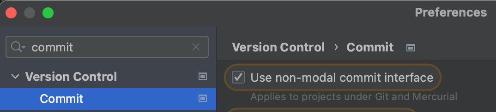
Changelists - Temporarily saving for the next commit
Sometimes you're deep in your code and you notice something that can be improved, or something that needs to be added. But you want to keep you commits granular, more focused on a single thing. To help with this I use Changelists:
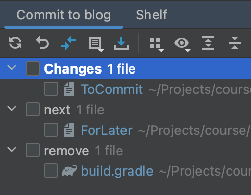
- Default changelists (Changes) - The work that I want to commit now
- next changelist - Stuff I want to commit at a later point, it is usually a TODO comment, but sometimes it's even initial code changes. However beware, that keeping refactor changes in the next changelist can break compilation, because of broken imports split into two changelists
- remove changelist - Temporary changes which should not be commited. For example, some experiments with gradle, code, or some hacky workarounds to fix some temporary issues.
Shelf - Permamently saving something for later (Like stashing but in the IDE)
When you're in the middle of working on your code, but have to quickly look something up on the main branch, or change to another, shelving the changes might be your best option. The shelf works like the built in git stash, but it is friendlier to work with, it's also simmilair to the next changelist, but more permament.
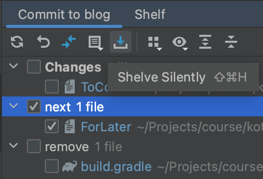
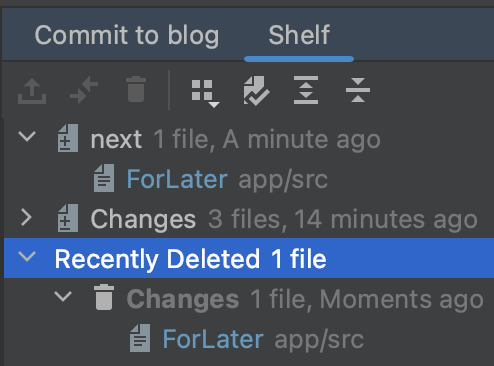
Keep in mind that they are not saved in the repository and only in the .idea directory, so they can be lost.
File history
Sometines you need to see what changes happened to a file, this is where the Show History function can be used. It lists all of the commits which included changes for this file.
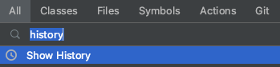
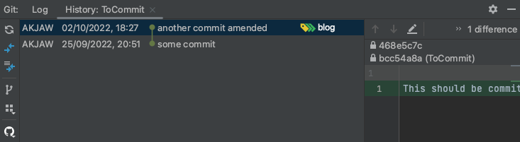
Honorable mentions:


Generic tips
If you'd like to improve your overall IDE workflow, checkout this article

Command line
TL;DR
My build is broken and I don't know why, get me out of here I don't care about losing my progress: git reset HEAD --hard
I needed to quickly change branches, but I forgot what branch I was on earlier: git switch -
I want to make a complex commit but I only have the command line: git add -i
My last commit has some issues (code / commit message): git commit --amend
I don't want to write so much: git config --global alias.<alias_name> "<alias_command>"
User friendly file staging
git add -i interactive mode which allows adding, removing, diffing, patching and more
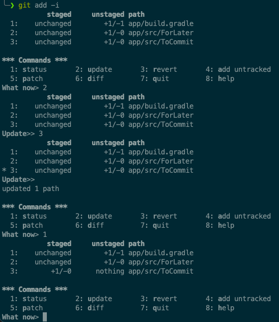
Interactive mode provides a much more user friendly staging management. If you don't have your IDE open and need to do a quick commit, add -i might be your best option. Besides adding there are a lot more useful features, feel free to explore them.
Undoing current or previous work
git reset HEAD - reset staging "I added some file to staging by accident, let me redo it"
git reset HEAD --hard - reset all staged and unstaged files "I want to throw away all my current changes and start from scratch"
git reset HEAD~ - undo the last commit and reset staging but keep them them in the working directory "I want to clean up something in the last commit / I committed to the wrong branch and want to keep this change for later"
git reset HEAD~ --hard - remove the last commit "The last commit makes no sense, let me throw it away"
* Beware that resetting something that was already pushed might create conflicts if someone else is working with that branch. If you are sure you're the only one, feel free to force push.
** HEAD~ allows specifying a number, for example: git reset HEAD~3 --hard would remove the last 3 commits


Looking at the commit history / Searching for something
git log -S 'code content' - search through commits based on code content
git log -p -S 'code content' - the same but also shows the commit diff
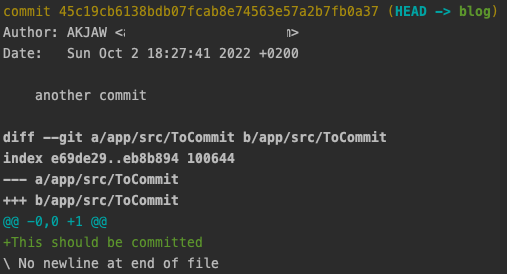
git log --grep='commit message content' - search through commits based on the commit message
git log --pretty=oneline - shows a shortened log
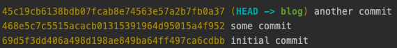
Rewriting history
git commit --amend - "I want to clean up the last commit"
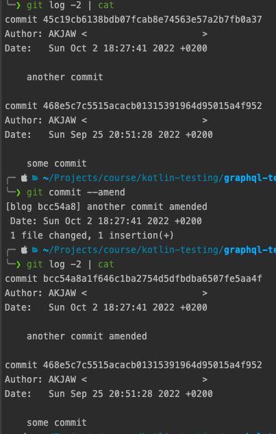
git rebase -i HEAD~n - rebase the last n commits.
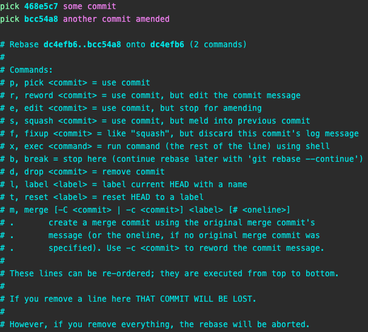
Interactive rebase is a powerful tool for cleaning up the commit history. Here are my most used features:
- r, reword - "I want to clean up a commit message further into history"
- e, edit - "I want to clean up some code further into history"
- s, squash - "The fix took 5 commits, but it would be cleaner as one. let me squash them into one singular commit"
- d, drop - "Some previous commit is irrelevant, and it is not referenced in newer commits, I can safely remove it"
* Beware that rebasing or amending changes the commit hashes, which can cause conflicts if the work was already pushed. If you are sure you're the only one working on that branch, feel free to force push.

 Monocasual Laboratories
Monocasual Laboratories
 Tekin Süleyman
Tekin Süleyman

Cherry picking
There are situation where:
- You or a colleague did a fix for an issue that's bothering you, but the fix is on a branch which can't be yet merged
- There is some really nasty merge conflicts, god knows why, but the problematic commit is in a middle of the PR
This is where you can cherry-pick one or multiple commits onto a different branch. I use it rarely, but when I need it, it is really helpful.


Branch navigation
- git checkout <existing-branch>
- git switch <existing-branch>
- git checkout -b <new-branch> - create branch and check out
- git switch -c <new-branch> - create branch and check out
- "git switch -" - checkout as previous branch
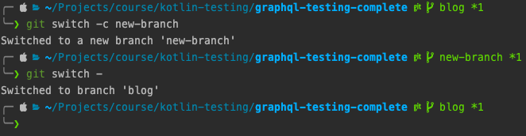
Switch is basically a newer version of checkout, but with a less action-packed and confusing functionality.
 Sergio De Simone
Sergio De Simone
Aliases
git config --get-regexp alias - listing existing aliases
git config --global alias.<alias_name> "<alias_command>" - setting an alias
My aliases:
alias.ss status -s
alias.ai add -i
alias.logone log --pretty=oneline
alias.s- switch -
alias.sc switch -cGit hooks
Git hooks are a powerful tool for automating some part of your workflow, in my case it usually is:
- Formatting code using a linter before committing (pre-commit hook)
- Ensuring that the commit message is formatted according to Conventional Commits guidelines (commit-msg hook)
My workflow
Is a mix of both IDE and the command line.
IDE:
- Managing changed files
- Diffing / Viewing changes
- Committing
- Resolving conflicts
Command line:
- Pushing and Force pushing
- Pulling and Fetching
- Cleaning up commit history
- Changing and deleting branches
- Searching through commits
- Resetting the workspace or the last commit
- Cherry picking
Git book
Most of my knowledge about how git works comes from the free Pro Git book. It contains a lot details, but you can focus only on stuff you need and then use it later as a reference when working with git.

Course
If you'd like to improve your git hygiene, or learn about more outside-coding processes, checkout the Android Next Level course which I'm a co-author of.